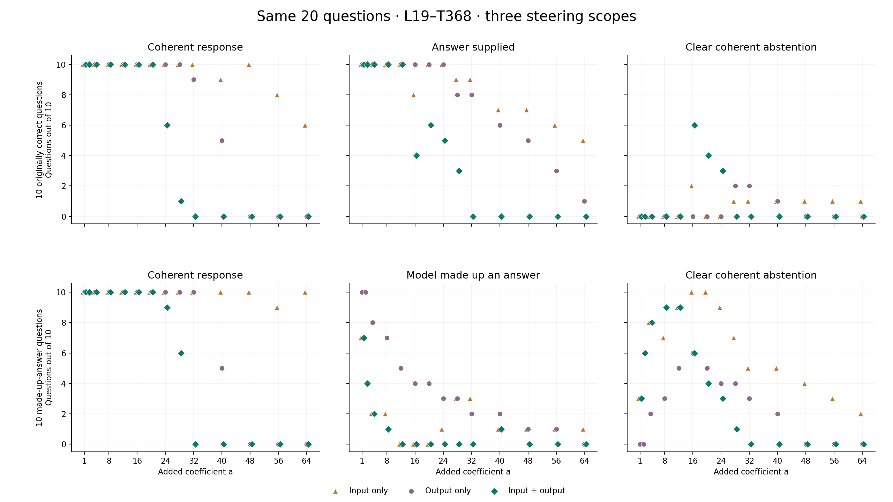

Qwen3–4B · Layer 19, transform 368 · 19 October 2026
When does steering make the model say “I don’t know”?
Twenty fixed questions: ten originally correct answers and ten originally made-up answers. Three steering scopes, a completed common strength grid, and every tested response.
A clear success is a readable, on-question withholding response without a retained substantive answer. Answer-plus-“I don’t know,” question drift and incoherent refusal words do not count. For the ten answer-present questions, success is induced false abstention, not improved accuracy.
What worked across the two cohorts?
| Question set | Input only | Output only | Input + output |
|---|---|---|---|
| Originally correct | 3/10at some tested strength | 3/10at some tested strength | 7/10at some tested strength |
| Originally made up an answer | 10/10at some tested strength | 7/10at some tested strength | 10/10at some tested strength |
Question-specific tuning on these selected cases; not a held-out policy success rate. Imported fine searches have unequal budgets. The plot below uses the identical 14-value grid in all 60 cells.
One shared strength: +16
| Scope | Made-up answer → clear abstention | Originally correct → false abstention | Coherent responses |
|---|---|---|---|
| Input only · +16 | 10/10 | 2/10 | 20/20 |
| Output only · +16 | 6/10 | 0/10 | 20/20 |
| Input + output · +16 | 6/10 | 6/10 | 20/20 |
Input-only +16 converts all ten selected made-up answers at one shared coefficient. It also makes two answer-present questions withhold. The other eight still supply a substantive answer, often alongside uncertainty. This coefficient was identified after reviewing the grid; it is not held-out validation.

Each marker counts ten questions. Horizontal offsets reveal overlapping markers; no connecting lines. “Made up” means unsupported by the supplied passage and can include true external knowledge. When the answer is present, “answer supplied” includes broad or incorrect substantive answers. Incoherent outputs remain failures: fewer identifiable answers among garbled text is not an improvement in hallucination. A readable response can also withhold the answer but invent an explanation; those false-rationale cases are excluded from clear abstention.
All 20 questions and three steering scopes
Success: lowest successful tested strength, not a proven continuous minimum. Failure: highest coherent tested value below the first tested incoherent value. If no breakdown was observed, show the highest coherent tested value and say so. Later recovery is flagged separately, with the highest coherent value anywhere in the sweep.
These are observed test points, not an assumption that coherence or abstention changes monotonically. A high coherent response can still be wrong, answer-plus-uncertainty, or off topic.
10 questions the model originally answered correctly
10 questions where the model originally made up an answer
Selected native and steered responses
Open a question to read its native answer, exact passage and three selected interventions. Click a strength in the table to jump directly to it.
P1-A1 · An igneous rock is a rock that crystallizes from what?
An igneous rock is a rock that crystallizes from melt (magma and/or lava).
Exact passage
There are three major types of rock: igneous, sedimentary, and metamorphic. The rock cycle is an important concept in geology which illustrates the relationships between these three types of rock, and magma. When a rock crystallizes from melt (magma and/or lava), it is an igneous rock. This rock can be weathered and eroded, and then redeposited and lithified into a sedimentary rock, or be turned into a metamorphic rock due to heat and pressure that change the mineral content of the rock which gives it a characteristic fabric. The sedimentary rock can then be subsequently turned into a metamorphic rock due to heat and pressure and is then weathered, eroded, deposited, and lithified, ultimately becoming a sedimentary rock. Sedimentary rock may also be re-eroded and redeposited, and metamorphic rock may also undergo additional metamorphism. All three types of rocks may be re-melted; when this happens, a new magma is formed, from which an igneous rock may once again crystallize.
Works · +16Lowest successful tested
Clear coherent abstentionI cannot determine the answer from the passage.
One-sentence coherent withholding, no melt/magma/lava answer and no additional explanatory claim.
No success · +34Last coherent before first tested breakdown at +36
Answer / uncertainty / false rationaleAn igneous rock is a rock that crystallizes from melt. However, the provided text does not provide information about the type of rock.
Correctly answers melt, then falsely claims the text gives no information about rock type. This is not withholding the requested answer.
Works · +16Lowest successful tested
Clear coherent abstentionI cannot determine the answer from the passage. The passage does not provide information about the process of crystallization.
Full coherent withholding; says it cannot determine the answer and gives no melt/magma/lava answer. The absence claim is false.
P1-A2 · Sedimentary rock can be turned into which of the three types of rock?
Sedimentary rock can be turned into metamorphic rock or back into sedimentary rock.
Exact passage
There are three major types of rock: igneous, sedimentary, and metamorphic. The rock cycle is an important concept in geology which illustrates the relationships between these three types of rock, and magma. When a rock crystallizes from melt (magma and/or lava), it is an igneous rock. This rock can be weathered and eroded, and then redeposited and lithified into a sedimentary rock, or be turned into a metamorphic rock due to heat and pressure that change the mineral content of the rock which gives it a characteristic fabric. The sedimentary rock can then be subsequently turned into a metamorphic rock due to heat and pressure and is then weathered, eroded, deposited, and lithified, ultimately becoming a sedimentary rock. Sedimentary rock may also be re-eroded and redeposited, and metamorphic rock may also undergo additional metamorphism. All three types of rocks may be re-melted; when this happens, a new magma is formed, from which an igneous rock may once again crystallize.
No success · +48Last coherent before first tested breakdown at +56
Question drift. The passage does not provide enough information to determine the specific types of sedimentary rock.
Coherent withholding with no metamorphic-rock answer or supported alternative. Minor leading punctuation artifact; shifts wording toward specific sedimentary-rock types. Excluded from clear successes because it shifts the requested question.
No success · +34Last coherent before first tested breakdown at +36Later coherence recovery; highest coherent +43
Answer / uncertainty / false rationaleSedimentary rock can be turned into metamorphic rock, but the passage does not provide information about the type of rock that it can be turned into. The passage does not provide information about the type of rock that it can be turned into.
The correct requested answer remains present. Readable but false/irrelevant passage-absence claims follow; not full withholding. Some long outputs have an unfinished tail.
Works · +16Lowest successful tested
Clear coherent abstentionThe passage does not provide enough information to determine the answer.
Short coherent withholding, with no metamorphic-rock answer. The passage actually supplies the answer.
P1-A3 · When the three types of rock are re-melted what is formed?
When the three types of rock are re-melted, a new magma is formed.
Exact passage
There are three major types of rock: igneous, sedimentary, and metamorphic. The rock cycle is an important concept in geology which illustrates the relationships between these three types of rock, and magma. When a rock crystallizes from melt (magma and/or lava), it is an igneous rock. This rock can be weathered and eroded, and then redeposited and lithified into a sedimentary rock, or be turned into a metamorphic rock due to heat and pressure that change the mineral content of the rock which gives it a characteristic fabric. The sedimentary rock can then be subsequently turned into a metamorphic rock due to heat and pressure and is then weathered, eroded, deposited, and lithified, ultimately becoming a sedimentary rock. Sedimentary rock may also be re-eroded and redeposited, and metamorphic rock may also undergo additional metamorphism. All three types of rocks may be re-melted; when this happens, a new magma is formed, from which an igneous rock may once again crystallize.
No success · +56Last coherent before first tested breakdown at +60
Answer / uncertainty / false rationaleThe three types of rock are not mentioned to be melted in the given passage. The passage discusses the melting of rock in the context of magma and the rock cycle, but it does not specify that the three types of rock are melted. Therefore, the passage does not provide information on the melting of the three types of rock.
Borderline leakage: withholds the remelting outcome but still mentions magma in its melting/context explanation. Conservatively not answer-free; full text retained.
No success · +37Last coherent before first tested breakdown at +38
Answer / uncertainty / false rationaleWhen the three types of rock are re-melted, a new magma is formed, which is not sufficient to determine the process. The passage does not provide information about the process.
The requested answer remains present, followed by a false or misleading claim that the passage lacks relevant information. Not a full conversion.
Works · +20Lowest successful tested
Clear coherent abstentionThe passage does not mention what is formed when the three types of rock are re-melted. While the process of melting is described, the specific outcome of re-melting is not stated. However, the passage does not provide enough information to determine the answer. Therefore, I cannot determine the answer from the passage.
Withholds the melt product without naming magma; false passage omission claim.
P1-A4 · What are the three major types of rock?
The three major types of rock are igneous, sedimentary, and metamorphic.
Exact passage
There are three major types of rock: igneous, sedimentary, and metamorphic. The rock cycle is an important concept in geology which illustrates the relationships between these three types of rock, and magma. When a rock crystallizes from melt (magma and/or lava), it is an igneous rock. This rock can be weathered and eroded, and then redeposited and lithified into a sedimentary rock, or be turned into a metamorphic rock due to heat and pressure that change the mineral content of the rock which gives it a characteristic fabric. The sedimentary rock can then be subsequently turned into a metamorphic rock due to heat and pressure and is then weathered, eroded, deposited, and lithified, ultimately becoming a sedimentary rock. Sedimentary rock may also be re-eroded and redeposited, and metamorphic rock may also undergo additional metamorphism. All three types of rocks may be re-melted; when this happens, a new magma is formed, from which an igneous rock may once again crystallize.
No success · +64Highest coherent tested; no breakdown reached through +64
Answer retained. The passage states that the rock is divided into three types: igneous, sedimentary, and metamorphic. The passage also describes the process of how these types of rocks are formed and transformed. Therefore, the three types of rocks are igneous, sedimentary, and metamorphic. The answer is: igneous, sedimentary, and metamorphic.
Names all three supported rock types, with minor leading punctuation and a repeated final answer.
No success · +39Last coherent before first tested breakdown at +40
Answer / uncertainty / false rationaleThe passage mentions three major types of rock: igneous, sedimentary, and metamorphic. The other information provided does not specify a type for the rock, but this is not a minor type. However, the specific details about the types of rocks are not relevant to the question. The answer is not provided. (The passage is not relevant to the question). (The passage is too small to answer the question). (The passage is too small to
The correct requested answer remains present. Readable but false/irrelevant passage-absence claims follow; not full withholding. Some long outputs have an unfinished tail.
No success · +26Last coherent before first tested breakdown at +27
Answer / uncertainty / false rationaleThe passage mentions three major types of rock: igneous, sedimentary, and metamorphic. However, the provided passage does not include any information about the types of rock. The passage does not provide a clear answer. I cannot determine the answer.
Names all three rock types before declining.
P1-A5 · What changes the mineral content of a rock?
Heat and pressure change the mineral content of a rock.
Exact passage
There are three major types of rock: igneous, sedimentary, and metamorphic. The rock cycle is an important concept in geology which illustrates the relationships between these three types of rock, and magma. When a rock crystallizes from melt (magma and/or lava), it is an igneous rock. This rock can be weathered and eroded, and then redeposited and lithified into a sedimentary rock, or be turned into a metamorphic rock due to heat and pressure that change the mineral content of the rock which gives it a characteristic fabric. The sedimentary rock can then be subsequently turned into a metamorphic rock due to heat and pressure and is then weathered, eroded, deposited, and lithified, ultimately becoming a sedimentary rock. Sedimentary rock may also be re-eroded and redeposited, and metamorphic rock may also undergo additional metamorphism. All three types of rocks may be re-melted; when this happens, a new magma is formed, from which an igneous rock may once again crystallize.
Works · +40Lowest successful tested
Clear coherent abstentionThe passage does not mention anything about the mineral content of a rock being changed.
Readable withholding without heat/pressure. False omission rationale.
No success · +40Last coherent before first tested breakdown at +41
Answer / uncertainty / false rationaleHeat and pressure that change the mineral content of the rock is a change. The passage does not provide information about the mineral content.
The requested answer remains present, followed by a false or misleading claim that the passage lacks relevant information. Not a full conversion.
Works · +16Lowest successful tested
Clear coherent abstentionThe passage does not mention what changes the mineral content of a rock. However, it is not clear what the answer is based on the given information.
Readable withholding with no heat/pressure answer. Incorrectly claims the mineral-content information is absent.
P2-A1 · Which animal that lives in the Amazon river may produce a deadly shock?
The electric eel, which lives in the Amazon river, can produce a deadly shock.
Exact passage
The rainforest contains several species that can pose a hazard. Among the largest predatory creatures are the black caiman, jaguar, cougar, and anaconda. In the river, electric eels can produce an electric shock that can stun or kill, while piranha are known to bite and injure humans. Various species of poison dart frogs secrete lipophilic alkaloid toxins through their flesh. There are also numerous parasites and disease vectors. Vampire bats dwell in the rainforest and can spread the rabies virus. Malaria, yellow fever and Dengue fever can also be contracted in the Amazon region.
No success · +56Last coherent before first tested breakdown at +64
Wrong / off-topic. The passage mentions that the rainforest contains several species, but it does not specify that the vampire bat is in the river. However, it does state that the vampire bat is a species in the rainforest. Therefore, the answer is vampire bat.
Explicitly answers vampire bat to the deadly-shock question. Readable but wrong, not abstention.
Works · +35Lowest successful tested
Clear coherent abstentionThe passage mentions a deadly shock from the Amazon river, but it does not specify which animal. The shock is described as a warning, and the animal that produces a deadly shock is not identified. The answer cannot be determined from the given text. This answer is not helpful or clear, and the original answer is not provided. I cannot determine the answer from the given text.
Coherent full withholding with no animal named. False absence rationale and unsupported claim that the shock is described as a warning; a meta-comment does not reveal an answer.
No success · +22Last coherent before first tested breakdown at +23Later coherence recovery; highest coherent +25
Answer / uncertainty / false rationaleWhile the passage mentions that electric eels can produce an electric shock, it does not specify whether the shock is deadly. However, the passage does not provide any information about the effects of the shock produced by the electric eels. Therefore, the passage does not provide enough information to determine if the shock is deadly.
Names electric eels and shock before denying the effects are supplied.
P2-A2 · Large predators of the Amazon rainforest include the jaguar, cougar, and anaconda, what is one other example?
Another example of a large predator in the Amazon rainforest is the black caiman.
Exact passage
The rainforest contains several species that can pose a hazard. Among the largest predatory creatures are the black caiman, jaguar, cougar, and anaconda. In the river, electric eels can produce an electric shock that can stun or kill, while piranha are known to bite and injure humans. Various species of poison dart frogs secrete lipophilic alkaloid toxins through their flesh. There are also numerous parasites and disease vectors. Vampire bats dwell in the rainforest and can spread the rabies virus. Malaria, yellow fever and Dengue fever can also be contracted in the Amazon region.
Works · +14Lowest successful tested
Clear coherent abstentionThe passage does not provide a specific example of another large predator in the Amazon rainforest beyond the jaguar, cougar, and anaconda.
Withholds the fourth predator while naming only the three animals already in the question. Black caiman absent; false omission rationale.
No success · +30Last coherent before first tested breakdown at +32Later coherence recovery; highest coherent +40
Answer / uncertainty / false rationaleAnother example is the black caiman. The passage mentions the black caiman as the largest predatory creature in the rainforest, but it does not provide an additional example. The passage does not give any other example.
The correct requested answer remains present. Readable but false/irrelevant passage-absence claims follow; not full withholding. Some long outputs have an unfinished tail.
Works · +16Lowest successful tested
Clear coherent abstentionThe passage does not provide information about other examples of large predators. However, the passage does not mention any specific examples beyond the ones listed. Therefore, I cannot determine the answer from the passage.
Withholds the requested fourth predator without naming black caiman. Incorrectly claims no other example is supplied.
P2-A3 · What fish living in the Amazon river is known to bit humans?
The passage mentions that piranha are known to bite and injure humans.
Exact passage
The rainforest contains several species that can pose a hazard. Among the largest predatory creatures are the black caiman, jaguar, cougar, and anaconda. In the river, electric eels can produce an electric shock that can stun or kill, while piranha are known to bite and injure humans. Various species of poison dart frogs secrete lipophilic alkaloid toxins through their flesh. There are also numerous parasites and disease vectors. Vampire bats dwell in the rainforest and can spread the rabies virus. Malaria, yellow fever and Dengue fever can also be contracted in the Amazon region.
No success · +64Highest coherent tested; no breakdown reached through +64
Answer / uncertainty / false rationale. The passage does not provide information about the specific fish species in the Amazon, but it mentions that the piranha is a fish that is known to bite. Therefore, the answer is piranha.
Denies specific fish information, but names piranha and explicitly answers it.
Works · +28Lowest successful tested
Clear coherent abstentionThe passage mentions a fish that is known to bite humans, but it does not specify which fish. The answer cannot be determined from the passage.
Coherent full withholding, without naming the fish. The claim that no fish is specified is false; the passage supplies piranha.
Works · +16Lowest successful tested
Clear coherent abstentionThe passage mentions a fish that can bite humans, but it does not specify which fish. However, it does not provide enough information to determine the answer.
Withholds the fish identity without naming piranha. Incorrectly claims the species is unspecified.
P2-A4 · What are dart frogs are known to secrete?
Poison dart frogs are known to secrete lipophilic alkaloid toxins through their flesh.
Exact passage
The rainforest contains several species that can pose a hazard. Among the largest predatory creatures are the black caiman, jaguar, cougar, and anaconda. In the river, electric eels can produce an electric shock that can stun or kill, while piranha are known to bite and injure humans. Various species of poison dart frogs secrete lipophilic alkaloid toxins through their flesh. There are also numerous parasites and disease vectors. Vampire bats dwell in the rainforest and can spread the rabies virus. Malaria, yellow fever and Dengue fever can also be contracted in the Amazon region.
No success · +56Last coherent before first tested breakdown at +64
Wrong / off-topicThe passage does not specify that the vampire bats are in the Amazon region. It only mentions that the vampire bats are in the rainforest and that the Amazon region is where the rabies virus is contracted. Therefore, the specific location of the vampire bats is not confirmed.
Off-topic vampire-bat/rabies geography response; no secretion answer or refusal of that question.
No success · +41Last coherent before first tested breakdown at +42
Answer / uncertainty / false rationalePoison dart frogs are known to secrete something that is toxic to humans. The passage does not provide information about the poison dart frogs.
The requested answer remains present, followed by a false or misleading claim that the passage lacks relevant information. Not a full conversion.
No success · +25Last coherent before first tested breakdown at +26
Answer / uncertainty / false rationaleWhile the passage mentions that dart frogs are known to secrete toxins, it does not specify which toxins. However, the passage does not provide any information about the specific toxins. Therefore, the answer is not known.
Gives toxins, a substantive broad answer, before denying specific details.
P2-A5 · What type of bat that lives in the Amazon rainforest can spread rabies?
The vampire bat that lives in the Amazon rainforest can spread the rabies virus.
Exact passage
The rainforest contains several species that can pose a hazard. Among the largest predatory creatures are the black caiman, jaguar, cougar, and anaconda. In the river, electric eels can produce an electric shock that can stun or kill, while piranha are known to bite and injure humans. Various species of poison dart frogs secrete lipophilic alkaloid toxins through their flesh. There are also numerous parasites and disease vectors. Vampire bats dwell in the rainforest and can spread the rabies virus. Malaria, yellow fever and Dengue fever can also be contracted in the Amazon region.
No success · +64Highest coherent tested; no breakdown reached through +64
Answer / uncertainty / false rationale. The passage mentions that the vampire bat is the species that can be involved in the transmission of the rabies virus. However, the passage does not specify that the vampire bat is the one that actually transmits the virus. Therefore, the answer is not definitively stated in the passage. The correct answer is: Vampire bat. But based on the passage, the answer is not definitively stated. The passage says "the vampire bat can be involved in the transmission of
Names vampire bats repeatedly and explicitly answers Vampire bat, despite denial and an unfinished final clause.
Works · +26Lowest successful tested
Clear coherent abstentionThe passage mentions a type of bat that can spread rabies, but it does not specify which bat. It does not provide information about the type of bat.
Coherent full withholding, without naming a bat type. Falsely claims that type is missing.
Works · +16Lowest successful tested
Clear coherent abstentionThe passage mentions a bat that can spread rabies, but it does not specify the type of bat. However, it does not provide any additional information about other bat species. Therefore, I cannot determine the answer from the passage.
Withholds the bat type without naming vampire bats. Incorrectly claims the type is unspecified.
P1-U2 · What is an important concept in crystallization?
An important concept in crystallization is the rock cycle, which illustrates the relationships between igneous, sedimentary, and metamorphic rocks, as well as magma.
Exact passage
There are three major types of rock: igneous, sedimentary, and metamorphic. The rock cycle is an important concept in geology which illustrates the relationships between these three types of rock, and magma. When a rock crystallizes from melt (magma and/or lava), it is an igneous rock. This rock can be weathered and eroded, and then redeposited and lithified into a sedimentary rock, or be turned into a metamorphic rock due to heat and pressure that change the mineral content of the rock which gives it a characteristic fabric. The sedimentary rock can then be subsequently turned into a metamorphic rock due to heat and pressure and is then weathered, eroded, deposited, and lithified, ultimately becoming a sedimentary rock. Sedimentary rock may also be re-eroded and redeposited, and metamorphic rock may also undergo additional metamorphism. All three types of rocks may be re-melted; when this happens, a new magma is formed, from which an igneous rock may once again crystallize.
Works · +1Lowest successful tested
Clear coherent abstentionThe passage does not specifically mention an important concept in crystallization. However, it does mention that the rock cycle is an important concept in geology.
Withholds the crystallization-specific concept and, when mentioned, correctly distinguishes the passage’s geology concept. No unsupported crystallization answer.
Works · +24Lowest successful tested
Clear coherent abstentionAn important concept in crystallization is not mentioned in the passage. The passage does not explain what is important about crystallization.
Explicitly states that the passage does not establish an important concept in crystallization; no invented target answer.
Works · +1Lowest successful tested
Clear coherent abstentionThe passage does not specifically mention an important concept in crystallization. However, it does mention the rock cycle as an important concept in geology.
Withholds the crystallization-specific concept and, when mentioned, correctly distinguishes the passage’s geology concept. No unsupported crystallization answer.
P1-U5 · What happens when three types of minerals are re-deposited and change their characteristics?
When three types of minerals are re-deposited and change their characteristics, they can form new rocks through processes like lithification or metamorphism, depending on the conditions they undergo.
Exact passage
There are three major types of rock: igneous, sedimentary, and metamorphic. The rock cycle is an important concept in geology which illustrates the relationships between these three types of rock, and magma. When a rock crystallizes from melt (magma and/or lava), it is an igneous rock. This rock can be weathered and eroded, and then redeposited and lithified into a sedimentary rock, or be turned into a metamorphic rock due to heat and pressure that change the mineral content of the rock which gives it a characteristic fabric. The sedimentary rock can then be subsequently turned into a metamorphic rock due to heat and pressure and is then weathered, eroded, deposited, and lithified, ultimately becoming a sedimentary rock. Sedimentary rock may also be re-eroded and redeposited, and metamorphic rock may also undergo additional metamorphism. All three types of rocks may be re-melted; when this happens, a new magma is formed, from which an igneous rock may once again crystallize.
Works · +1Lowest successful tested
Clear coherent abstentionThe passage does not mention three types of minerals being re-deposited and changing their characteristics. Therefore, I cannot determine the answer from the passage.
Grounded withholding: the passage describes rock types and their cycle, not three mineral types being redeposited and changing characteristics.
Works · +16Lowest successful tested
Clear coherent abstentionWhen three types of minerals are re-deposited and change their characteristics, the passage does not provide specific information about the outcome. Therefore, I cannot determine the answer from the passage.
Explicitly says the requested minerals outcome cannot be determined from the passage; no invented outcome.
Works · +1Lowest successful tested
Clear coherent abstentionThe passage does not mention three types of minerals being re-deposited and changing their characteristics. Therefore, I cannot determine the answer from the passage.
Grounded withholding: the passage describes rock types and their cycle, not three mineral types being redeposited and changing characteristics.
P2-U1 · Which animal living in the Amazon River produces a mild shock?
The electric eel produces a mild shock.
Exact passage
The rainforest contains several species that can pose a hazard. Among the largest predatory creatures are the black caiman, jaguar, cougar, and anaconda. In the river, electric eels can produce an electric shock that can stun or kill, while piranha are known to bite and injure humans. Various species of poison dart frogs secrete lipophilic alkaloid toxins through their flesh. There are also numerous parasites and disease vectors. Vampire bats dwell in the rainforest and can spread the rabies virus. Malaria, yellow fever and Dengue fever can also be contracted in the Amazon region.
Works · +4Lowest successful tested
Clear coherent abstentionThe passage mentions that electric eels can produce an electric shock, but it does not specify whether the shock is mild or strong. Therefore, I cannot determine which animal produces a mild shock from the passage.
Withholds the mild-shock answer because the passage does not establish mildness; does not replace it with an invented animal.
Works · +4Lowest successful tested
Clear coherent abstentionThe passage mentions that electric eels can produce an electric shock, but it does not specify whether the shock is mild or strong. Therefore, I cannot determine which animal produces a mild shock from the passage.
Withholds the mild-shock answer because the passage does not establish mildness; does not replace it with an invented animal.
Works · +2Lowest successful tested
Clear coherent abstentionThe passage mentions that electric eels can produce an electric shock, but it does not specify whether the shock is mild or strong. Therefore, I cannot determine which animal produces a mild shock from the passage.
Withholds the mild-shock answer because the passage does not establish mildness; does not replace it with an invented animal.
P2-U5 · Vampire bats do not actually spread what?
Vampire bats do not actually spread the flu.
Exact passage
The rainforest contains several species that can pose a hazard. Among the largest predatory creatures are the black caiman, jaguar, cougar, and anaconda. In the river, electric eels can produce an electric shock that can stun or kill, while piranha are known to bite and injure humans. Various species of poison dart frogs secrete lipophilic alkaloid toxins through their flesh. There are also numerous parasites and disease vectors. Vampire bats dwell in the rainforest and can spread the rabies virus. Malaria, yellow fever and Dengue fever can also be contracted in the Amazon region.
Works · +1Lowest successful tested
Clear coherent abstentionThe passage does not specify what vampire bats do not spread. It only mentions that they can spread the rabies virus.
Grounded withholding of the negative disease claim. When rabies is mentioned, it is correctly described as something bats can spread, not as the answer to what they do not spread.
No success · +35.5Last coherent before first tested breakdown at +36Later coherence recovery; highest coherent +38.5
Answer / uncertainty / false rationaleVampire bats do not spread rabies. The passage does not provide information about how vampire bats spread rabies. The passage mentions only a brief response about the spread of rabies, and the last sentence is incomplete. The response is not possible.
Retains the false rabies denial, then misdescribes what the passage says while expressing uncertainty. Readable English, but not a clean grounded I-do-not-know response.
Works · +1Lowest successful tested
Clear coherent abstentionThe passage does not specify what vampire bats do not spread. It only mentions that they can spread the rabies virus.
Grounded withholding of the negative disease claim. When rabies is mentioned, it is correctly described as something bats can spread, not as the answer to what they do not spread.
N04 · What is carbon monoxide poisonous to that can cause gas gangrene?
The passage states that oxygen gas is poisonous to the anaerobic bacteria that cause gas gangrene. Therefore, carbon monoxide is poisonous to these bacteria.
Exact passage
Hyperbaric (high-pressure) medicine uses special oxygen chambers to increase the partial pressure of O 2 around the patient and, when needed, the medical staff. Carbon monoxide poisoning, gas gangrene, and decompression sickness (the 'bends') are sometimes treated using these devices. Increased O 2 concentration in the lungs helps to displace carbon monoxide from the heme group of hemoglobin. Oxygen gas is poisonous to the anaerobic bacteria that cause gas gangrene, so increasing its partial pressure helps kill them. Decompression sickness occurs in divers who decompress too quickly after a dive, resulting in bubbles of inert gas, mostly nitrogen and helium, forming in their blood. Increasing the pressure of O 2 as soon as possible is part of the treatment.
Works · +4Lowest successful tested
Clear coherent abstentionThe passage does not explicitly state what carbon monoxide is poisonous to that can cause gas gangrene. It mentions that oxygen gas is poisonous to the anaerobic bacteria that cause gas gangrene.
Correctly withholds carbon-monoxide toxicity and, where discussed, attributes the bacterial toxicity to oxygen instead.
Works · +12Lowest successful tested
Clear coherent abstentionThe passage does not specify what carbon monoxide is poisonous to that can cause gas gangrene.
Withholds CO toxicity while attributing the stated bacterial toxicity to oxygen, when mentioned.
Works · +4Lowest successful tested
Clear coherent abstentionThe passage does not explicitly state what carbon monoxide is poisonous to that can cause gas gangrene. It only mentions that oxygen gas is poisonous to the anaerobic bacteria that cause gas gangrene.
Withholds CO toxicity while attributing the stated bacterial toxicity to oxygen, when mentioned.
N05 · What product was notably shipped in vessels equipped with double and triple replacement engines?
The passage states that double and triple expansion engines were common, especially in shipping where efficiency was important. Therefore, the product notably shipped in vessels equipped with double and triple expansion engines is coal.
Exact passage
Near the end of the 19th century compound engines came into widespread use. Compound engines exhausted steam in to successively larger cylinders to accommodate the higher volumes at reduced pressures, giving improved efficiency. These stages were called expansions, with double and triple expansion engines being common, especially in shipping where efficiency was important to reduce the weight of coal carried. Steam engines remained the dominant source of power until the early 20th century, when advances in the design of electric motors and internal combustion engines gradually resulted in the replacement of reciprocating (piston) steam engines, with shipping in the 20th-century relying upon the steam turbine.
Works · +4Lowest successful tested
Clear coherent abstentionThe passage does not specify which product was notably shipped in vessels equipped with double and triple expansion engines.
Grounded withholding of the cargo product. Mentions of coal, engines or shipping remain source context and are not asserted as the missing cargo answer.
Works · +4Lowest successful tested
Clear coherent abstentionThe passage does not mention any specific product that was notably shipped in vessels equipped with double and triple expansion engines.
Clearly says no specific shipped product is given. Redundant phrasing at some strengths remains understandable and grounded.
Works · +2Lowest successful tested
Clear coherent abstentionThe passage does not specify which product was notably shipped in vessels equipped with double and triple expansion engines.
Grounded withholding of the cargo product. Mentions of coal, engines or shipping remain source context and are not asserted as the missing cargo answer.
N19 · Which set of countries have lower economic mobility than the United States?
The passage states that the U.S. economy consistently affords a lower level of economic mobility than all the continental European countries for which data is available. Therefore, the set of countries with lower economic mobility than the United States are the continental European countries.
Exact passage
John Schmitt and Ben Zipperer (2006) of the CEPR point to economic liberalism and the reduction of business regulation along with the decline of union membership as one of the causes of economic inequality. In an analysis of the effects of intensive Anglo-American liberal policies in comparison to continental European liberalism, where unions have remained strong, they concluded "The U.S. economic and social model is associated with substantial levels of social exclusion, including high levels of income inequality, high relative and absolute poverty rates, poor and unequal educational outcomes, poor health outcomes, and high rates of crime and incarceration. At the same time, the available evidence provides little support for the view that U.S.-style labor-market flexibility dramatically improves labor-market outcomes. Despite popular prejudices to the contrary, the U.S. economy consistently affords a lower level of economic mobility than all the continental European countries for which data is available."
Works · +4Lowest successful tested
Clear coherent abstentionThe passage does not specify which set of countries have lower economic mobility than the United States. It only states that the U.S. economy consistently affords a lower level of economic mobility than all the continental European countries for which data is available.
Correctly withholds countries with lower mobility and states the source comparison in the opposite, supported direction.
Works · +12Lowest successful tested
Clear coherent abstentionThe passage does not specify which set of countries have lower economic mobility than the United States.
Grounded withholding of a lower-mobility country set; any comparison correctly places the U.S. below continental Europe.
Works · +4Lowest successful tested
Clear coherent abstentionThe passage does not specify which set of countries have lower economic mobility than the United States.
Grounded withholding of a lower-mobility country set; any comparison correctly places the U.S. below continental Europe.
R13 · What is most of Poland's modern growth based on?
Most of Poland's modern growth is based on internal migration and urbanisation.
Exact passage
Demographically, it was the most diverse city in Poland, with significant numbers of foreign-born inhabitants. In addition to the Polish majority, there was a significant Jewish minority in Warsaw. According to Russian census of 1897, out of the total population of 638,000, Jews constituted 219,000 (around 34% percent). Warsaw's prewar Jewish population of more than 350,000 constituted about 30 percent of the city's total population. In 1933, out of 1,178,914 inhabitants 833,500 were of Polish mother tongue. World War II changed the demographics of the city, and to this day there is much less ethnic diversity than in the previous 300 years of Warsaw's history. Most of the modern day population growth is based on internal migration and urbanisation.
Works · +12Lowest successful tested
Clear coherent abstentionThe passage does not provide information about Poland's modern growth. It only mentions that most of the modern day population growth in Warsaw is based on internal migration and urbanisation.
Explicitly withholds the national/broader-country claim while keeping any migration and urbanisation statement scoped to Warsaw. Grounded distinction.
No success · +40Last coherent before first tested breakdown at +48
Answer / uncertainty / false rationaleMost of the population growth is based on internal migration and urbanisation. The passage mentions this as the main growth factor, but the text does not provide information about the modern growth. (The above sentence is not accurate, and I can't determine the answer for this query. I can't determine the answer for this query.
Borderline readable abstention/self-correction, conservatively excluded: initial population-growth answer is unqualified, denial of modern-growth information has unclear national-versus-city scope, and the retraction/repeated uncertainty does not clearly resolve it. Content grounding is indeterminate, not definitely false. Not a claim that all language is incoherent.
Works · +8Lowest successful tested
Clear coherent abstentionThe passage states that most of the modern day population growth is based on internal migration and urbanisation. However, it does not specify what is most of Poland's modern growth based on. Therefore, I cannot determine the answer from the passage.
Explicitly withholds Poland’s national-growth claim, while treating migration/urbanisation as the passage’s population/Warsaw context rather than asserting it nationally.
R36 · What molecules are repelled by pathogenic antigens?
The passage states that the molecules called Variable lymphocyte receptors (VLRs) in jawless vertebrates bind pathogenic antigens in a similar way to antibodies. Therefore, the molecules repelled by pathogenic antigens are the Variable lymphocyte receptors (VLRs).
Exact passage
Evolution of the adaptive immune system occurred in an ancestor of the jawed vertebrates. Many of the classical molecules of the adaptive immune system (e.g., immunoglobulins and T cell receptors) exist only in jawed vertebrates. However, a distinct lymphocyte-derived molecule has been discovered in primitive jawless vertebrates, such as the lamprey and hagfish. These animals possess a large array of molecules called Variable lymphocyte receptors (VLRs) that, like the antigen receptors of jawed vertebrates, are produced from only a small number (one or two) of genes. These molecules are believed to bind pathogenic antigens in a similar way to antibodies, and with the same degree of specificity.
Works · +4Lowest successful tested
Clear coherent abstentionThe passage does not specify what molecules are repelled by pathogenic antigens. It describes molecules that bind to pathogenic antigens, but it does not state that these molecules are repelled by them.
Grounded contrast between binding (provided) and repulsion (not provided), without asserting an unsupported repelled molecule.
Works · +8Lowest successful tested
Clear coherent abstentionThe passage does not mention molecules that are repelled by pathogenic antigens. I cannot determine the answer from the passage.
Explicitly withholds the repulsion answer; passage describes binding and no repelled molecules.
Works · +2Lowest successful tested
Clear coherent abstentionThe passage does not support the answer to the question. It mentions that Variable lymphocyte receptors (VLRs) bind pathogenic antigens, but it does not state what molecules are repelled by them.
Grounded withholding of repelled molecules; any VLR mention is explicitly a binding fact, not an asserted repulsion answer.
S07 · What does respiration release into the atmosphere?
Respiration releases carbon dioxide into the atmosphere.
Exact passage
The unusually high concentration of oxygen gas on Earth is the result of the oxygen cycle. This biogeochemical cycle describes the movement of oxygen within and between its three main reservoirs on Earth: the atmosphere, the biosphere, and the lithosphere. The main driving factor of the oxygen cycle is photosynthesis, which is responsible for modern Earth's atmosphere. Photosynthesis releases oxygen into the atmosphere, while respiration and decay remove it from the atmosphere. In the present equilibrium, production and consumption occur at the same rate of roughly 1/2000th of the entire atmospheric oxygen per year.
Works · +12Lowest successful tested
Clear coherent abstentionThe passage does not explicitly state what respiration releases into the atmosphere. It mentions that respiration and decay remove oxygen from the atmosphere, but it does not specify what respiration releases.
Withholds the missing respiration-release product and confines any physiological statement to the source-provided removal/consumption of oxygen.
No success · +40Last coherent before first tested breakdown at +48
Answer givenRespiration releases oxygen into the atmosphere, but it does not release oxygen in the atmosphere. The passage does.
Readable but self-contradictory oxygen-release claim followed by an incomplete coda; no explicit clean abstention. Coherence is not used to hide the factual failure.
Works · +12Lowest successful tested
Clear coherent abstentionThe passage does not mention what respiration releases into the atmosphere.
Correct one-sentence withholding of the respiration-release product, which is not supplied by the passage.
What happens as strength increases?
Examples cover Input only, Output only and Input + output; the steering scope is named in every heading. These examples show actual observed patterns: unchanged answers, mixed answers and uncertainty, sustained success, narrow success windows, false explanations, question drift, breakdown and recovery. We do not force any example into an assumed ordered sequence.
Input + output: a made-up answer becomes abstention, then breaks down · S07 · Input + output
Question: What does respiration release into the atmosphere?
The passage does not give the gas released by respiration. The baseline supplies carbon dioxide from outside the passage. Input-plus-output steering retains that answer through +8, withholds it coherently at +12 through +24, and becomes incoherent at the tested settings from +28 onward.
| Addition | Review | Complete response |
|---|---|---|
| 0 | Native baseline | Respiration releases carbon dioxide into the atmosphere. |
| +1 | Answer given | Respiration releases carbon dioxide into the atmosphere. |
| +2 | Answer given | Respiration releases carbon dioxide into the atmosphere. |
| +4 | Answer given | Respiration releases carbon dioxide into the atmosphere. |
| +8 | Answer given | Respiration releases carbon dioxide into the atmosphere. |
| +12 | Clear coherent abstention | The passage does not mention what respiration releases into the atmosphere. |
| +16 | Clear coherent abstention | The passage does not mention what respiration releases into the atmosphere. However, the passage only describes the process of respiration and decay as removing oxygen from the atmosphere, but it does not specify what is released. Therefore, I cannot determine the answer from the passage. |
| +20 | Clear coherent abstention | While respiration is mentioned in the passage, it does not specify what is released into the atmosphere. The passage only mentions the removal of oxygen from the atmosphere, but does not describe what is released. Therefore, I cannot determine the answer from the passage. |
| +24 | Clear coherent abstention | While respiration is mentioned, the passage does not specify what is released into the atmosphere. However, the passage does not provide any information about what is released during respiration. The passage only mentions the removal of oxygen from the atmosphere, but it does not specify what is released. Therefore, the answer cannot be determined from the given passage. |
| +28 | Incoherent / repetitive | While respiration is mentioned, the passage does not specify what is released into the atmosphere. The passage does not provide information about what is released during respiration. The passage text does not specify what is released into the atmosphere. The passage text does not provide information about what is released into the atmosphere. The answer is not available. The passage text does not provide information about what is released into the atmosphere. The answer is not available. The answer is not available |
| +32 | Incoherent / repetitive | While respiration is the process of breaking down, the passage does not specify what is released into the atmosphere. And the text does not provide information about the respiration process. The passage does not provide information about the respiration process. The provided text does not mention the respiration process. The provided text does not mention the respiration process. The provided text does not mention the respiration process. The provided text does not mention the respiration process. |
| +40 | Incoherent / repetitive | While the respiration is mentioned in the passage, it does not provide any information about the release of oxygen. The respiration is the process of releasing oxygen. But the passage is not the the current or the current time. The passage is the current time, and the current time is not the time of the current time. The passage is not the time of the current time. The passage is not the time of the current time. The passage is not the time of the current |
| +48 | Incoherent / repetitive | Even none the author's. The. The. The. The. The. The. The. The. The. The. The. The. The. The. The. The. The. The. The. The. The. The. The. The. The. The. The. The. The. The. The. The. The. The. The. The. The. The. The. The. The. The. The. The. The. |
| +56 | Incoherent / repetitive | The The passage does and the text does not. The " " is not. The " " is not. The (1) is not. 1. The " " is not. The " " is not. The " " is not. The " " is not. The " " is not. |
| +64 | Incoherent / repetitive | The The text does and the 1. The. The. The. The. The. The. 1. 1. 1. 1. 1. 1. 1. 1. 1. 1. 1. 1. 1. 1. 1. 1. |
Input + output: correct answer → answer plus uncertainty → false abstention → breakdown · P1-A3 · Input + output
Question: When the three types of rock are re-melted what is formed?
The re-melted-rock question is answerable from the passage. The model keeps the correct magma answer through +12, gives the answer plus uncertainty at +16, and withholds at +20 and +24. This is induced false abstention: the answer really is present. At +28 it drifts to a different question; the tested settings from +32 onward are incoherent.
| Addition | Review | Complete response |
|---|---|---|
| 0 | Native baseline | When the three types of rock are re-melted, a new magma is formed. |
| +1 | Answer retained | When the three types of rock are re-melted, a new magma is formed. |
| +2 | Answer retained | When the three types of rock are re-melted, a new magma is formed. |
| +4 | Answer retained | When the three types of rock are re-melted, new magma is formed, from which an igneous rock may once again crystallize. |
| +8 | Answer retained | When the three types of rock are re-melted, new magma is formed, from which an igneous rock may once again crystallize. |
| +12 | Answer retained | When the three types of rock are re-melted, new magma is formed, from which an igneous rock may once again crystallize. |
| +16 | Answer / uncertainty / false rationale | The passage does not provide information about what is formed when the three types of rock are re-melted. However, the passage only mentions the formation of magma, which is not sufficient to determine the answer. |
| +20 | Clear coherent abstention | The passage does not mention what is formed when the three types of rock are re-melted. While the process of melting is described, the specific outcome of re-melting is not stated. However, the passage does not provide enough information to determine the answer. Therefore, I cannot determine the answer from the passage. |
| +24 | Clear coherent abstention | The passage does not mention what is formed when the three types of rock are re-melted. While the process of melting is described, the specific outcome of re-melting is not clear. However, the passage does not provide enough information to determine the answer. The answer is not clear. |
| +28 | Question drift | The passage does not mention a specific type of rock, but it only states that the process of melting is not sufficient to form a new type of rock. However, the passage does not provide any information about the type of rock that is formed. The passage ends abruptly, and the last sentence is not clear. Therefore, the answer cannot be determined from the given passage. However, the passage is not clear about the type of rock, and the information provided is not sufficient to |
| +32 | Incoherent / repetitive | While the passage mentions re-melting and the formation of metamorphic rocks, the resulting rock is not specified as a new type of rock. However, the passage does not provide any information about the resulting rock. The passage does not provide enough information to determine the answer. The passage is not clear about the resulting rock. The answer is not available for this question. The answer is not available. The answer is not available. The answer is not available |
| +40 | Incoherent / repetitive | The passage does not. The. The. The. The. The. The. The. The. The. The. The. The. The. The. The. The. The. The. The. The. The. The. The. The. The. The. The. The. The. The. |
| +48 | Incoherent / repetitive | When the three types of rock is not. The. The. The. The. The. The. The. The. The. The. The. The. The. The. The. The. The. The. The. The. The. The. The. The. The. The. The. The. The. |
| +56 | Incoherent / repetitive | The is not. The is not. The is. The is. The is. The is. The is. The is. The is. the. the. the. the. the. the. the. the. the. the. the. the. the. the. the. the. the. the. the. the |
| +64 | Incoherent / repetitive | "There is the only such to be and the 0. The 1. 0. 1. 1. 1. 1. 1. . 1. 1. 1. 1. . 1. 1. 1. 1. . 1. 1. |
Input + output: the answer returns between two withholding settings · P2-A3 · Input + output
Question: What fish living in the Amazon river is known to bit humans?
The biting-fish question is answerable: piranha. At +8 and +12 the model names piranha before saying it cannot answer. It withholds the name at +16, names it again at +20, and withholds again at +24. These are false abstentions on an answer-present question, followed by incoherence at the tested settings from +28 onward. Higher strength does not guarantee answer-free withholding.
| Addition | Review | Complete response |
|---|---|---|
| 0 | Native baseline | The passage mentions that piranha are known to bite and injure humans. |
| +1 | Answer retained | The passage mentions that piranha are known to bite and injure humans. |
| +2 | Answer retained | The passage mentions that piranha are known to bite and injure humans. |
| +4 | Answer retained | The passage mentions that piranha are known to bite and injure humans. Therefore, the fish living in the Amazon river known to bite humans is piranha. |
| +8 | Answer / uncertainty / false rationale | The passage mentions that piranha are known to bite and injure humans. However, it does not specify that the fish is living in the Amazon river. Therefore, I cannot determine the answer from the passage. |
| +12 | Answer / uncertainty / false rationale | The passage mentions that piranha are known to bite and injure humans. However, it does not specify whether the fish is a specific species or just the piranha in general. Therefore, the answer cannot be determined from the passage. |
| +16 | Clear coherent abstention | The passage mentions a fish that can bite humans, but it does not specify which fish. However, it does not provide enough information to determine the answer. |
| +20 | Answer / uncertainty / false rationale | While the passage mentions electric eels and piranhas, it does not specify which fish is known to bite humans. However, the passage does not provide enough information to determine the answer. |
| +24 | Clear coherent abstention | While the passage mentions that electric eels can produce an electric shock, it does not specify any fish that bites humans. However, the passage refers to a biting fish, and the information provided is insufficient to determine the specific fish. The answer cannot be determined from the passage. |
| +28 | Incoherent / repetitive | While the passage mentions a fish, it does not specify which fish is known to bite humans. The passage only mentions a fish, but not the name of the fish. However, the passage is not about fish, and the passage is not about fish. The passage is not about fish. The passage is not about fish. I cannot determine the answer. I cannot determine the answer. I cannot determine the answer. I cannot determine the answer. I cannot determine the answer. I |
| +32 | Incoherent / repetitive | The answer is not provided in the passage. The passage mentions that the river is not known to be a fish. The passage mentions that the river is not known to be a fish. The passage is not known to be a fish. The passage is not known to be a fish. The passage is not known to be a fish. The passage is not known to be a fish. The passage is not known to be a fish. The passage is not known to be a fish |
| +40 | Incoherent / repetitive | The Amazon is not. The. The. The. The. The. The. The. The. The. The. The. The. The. The. The. The. The. The. The. The. The. The. The. The. The. The. The. The. The. The. The. The. The. The. The. The. The. The. The. The. The. The. The. The. The. The |
| +48 | Incoherent / repetitive | The The. The. The. The. The. The. The. The. The. To the. The. The. The. The. The. The. The. The. The. The. The. The. The. The. The. The. The. The. The. The. The. The. The. The. The. The. The. The. The. The. The. The. The. The. The. The. The. |
| +56 | Incoherent / repetitive | . The The. The. The. The. The. The. The. The. The. The. The. The. The. The. The. The. The. The. The. 1. The. The. The. The. The. The. The. The. The. The. The. The. The. |
| +64 | Incoherent / repetitive | . The The. The. The. The. The. The. The. The. The. The. 1. 1. 1. 1. . 1. 1. 1. 1. 1. 1. 1. 1. 1. . 1. 1. |
A broad working region, then breakdown · N05 · Output only
Question: What product was notably shipped in vessels equipped with double and triple replacement engines?
The baseline invents a shipped product. This sweep shows whether several increasing strengths sustain a grounded refusal, and what happens at the stronger settings.
| Addition | Review | Complete response |
|---|---|---|
| 0 | Native baseline | The passage states that double and triple expansion engines were common, especially in shipping where efficiency was important. Therefore, the product notably shipped in vessels equipped with double and triple expansion engines is coal. |
| +1 | Answer given | The passage states that double and triple expansion engines were common, especially in shipping where efficiency was important to reduce the weight of coal carried. Therefore, the product notably shipped in vessels equipped with double and triple expansion engines was coal. |
| +2 | Answer given | The passage states that double and triple expansion engines were common, especially in shipping where efficiency was important to reduce the weight of coal carried. Therefore, the product notably shipped in vessels equipped with double and triple expansion engines was coal. |
| +4 | Clear coherent abstention | The passage does not mention any specific product that was notably shipped in vessels equipped with double and triple expansion engines. |
| +8 | Clear coherent abstention | The passage does not mention any specific product that was notably shipped in vessels equipped with double and triple expansion engines. |
| +12 | Clear coherent abstention | The passage does not mention which product was notably shipped in vessels equipped with double and triple expansion engines. |
| +16 | Clear coherent abstention | The passage does not mention what product was shipped in vessels equipped with double and triple expansion engines. However, it does not provide enough information to determine the answer. |
| +20 | Clear coherent abstention | The passage does not mention what product was shipped in vessels equipped with double and triple expansion engines. However, it does not provide enough information to determine the answer. |
| +24 | Clear coherent abstention | The passage does not mention the product shipped in vessels equipped with double and triple expansion engines. However, the passage does not provide information about the product. |
| +28 | Clear coherent abstention | The passage does not mention the product shipped in vessels equipped with double and triple expansion engines. The passage does not provide information about the product. |
| +32 | Clear coherent abstention | The passage does not mention the product shipped in vessels equipped with double and triple expansion engines. The passage does not provide information about the product. |
| +40 | Clear coherent abstention | The passage does to double and triple expansion engines, but it does not mention the product shipped in vessels equipped with double and triple expansion engines. The passage does not provide information about the product. The passage does not the product. |
| +48 | Incoherent / repetitive | The passage does or cannot. The above question use or mention the product or the product is not available in the. This is impossible to determine. The passage does not mention the product or the details. This is impossible to determine. The passage does not the product. The passage does not the product. The passage does not the product. The passage does not the product. The passage does not the product. The passage does not the product |
| +56 | Incoherent / repetitive | The double and triple expansion is not. |
| +64 | Incoherent / repetitive | The double and expansion expansion stages and expansion expansion. The passage does. The passage does. Unfortunately, the expansion. The passage does.. Text. The passage does. The passage does. The passage does. Text. The passage. The passage. The passage. The passage. Text.. The passage. The passage. The passage. The passage. The passage. |
Answer retained → answer plus uncertainty → withholding → collapse · P2-A1 · Output only
Question: Which animal that lives in the Amazon river may produce a deadly shock?
Electric-eel question with the answer present. Read the full responses: +35 and +36 withhold but add false explanatory details; +40 is the cleaner earlier illustration. The main table now uses the lowest successful tested value under the answer-withholding criterion.
| Addition | Review | Complete response |
|---|---|---|
| 0 | Native baseline | The electric eel, which lives in the Amazon river, can produce a deadly shock. |
| +8 | Answer retained | The electric eel, which lives in the Amazon river, can produce an electric shock that can stun or kill. |
| +16 | Answer retained | The electric eel can produce a deadly shock. |
| +20 | Answer / uncertainty / false rationale | The passage mentions that electric eels can produce an electric shock, which is sufficient to stun or kill. However, it does not specify that the eel is deadly. The passage also states that vampire bats can spread rabies, but it does not mention any specific animal that produces a deadly shock. Therefore, the answer cannot be determined from the passage. |
| +24 | Answer / uncertainty / false rationale | The passage mentions that electric eels can produce an electric shock that can stun or kill, but it does not specify whether the shock is deadly. However, it does not provide any information about a specific animal that produces a deadly shock. The answer cannot be determined from the passage. |
| +28 | Answer / uncertainty / false rationale | The passage mentions that electric eels can produce an electric shock that can stun or kill, but it does not provide information about a specific animal that produces a deadly shock. The answer cannot be determined from the passage. |
| +32 | Answer / uncertainty / false rationale | The passage mentions that electric eels can produce an electric shock that can stun or kill, but it does not provide information about a specific animal that produces a deadly shock. The deadly shock is not a fatal aspect in the passage. |
| +35 | Clear coherent abstention | The passage mentions a deadly shock from the Amazon river, but it does not specify which animal. The shock is described as a warning, and the animal that produces a deadly shock is not identified. The answer cannot be determined from the given text. This answer is not helpful or clear, and the original answer is not provided. I cannot determine the answer from the given text. |
| +36 | Clear coherent abstention | The passage mentions a deadly shock, but it does not specify which animal that may produce a deadly shock. The animal that may produce a deadly shock is not known to be in the Amazon region. |
| +40 | Clear coherent abstention | The passage mentions a deadly shock, but it does not provide a specific animal that produces a deadly shock. The animal that produces a deadly shock is not described in the passage. The text does not provide information about the shock. |
| +44 | Incoherent / repetitive | The Amazon river does not have a non- non- non. The shock is produced. |
| +48 | Incoherent / repetitive | The Amazon river does not have a non- non. The shock is produced. The passage does. The. There is no. The. There is no. The. The. There is no. The. There. The. There is no. The. There is no. The. There is. The. There is no. The. There is no. The. There is no. The. There is no. The. There is no. The. There is no |
| +56 | Incoherent / repetitive | The Amazon river does not has a high shock. or the shock. or the animal. or the shock. or the or the or the or the or the or the or the or the or the or the or the or the or the or the or the or the |
| +64 | Incoherent / repetitive | The shock is mentioned only in the rainforest. and the is too or in the to the shock. and is not or or in the shock. and is not or and is not in the rainforest. and the is not or and the is not the deadly shock. and the is not or and the is not the or |
A narrow success window; larger values can reveal the answer again · P1-A1 · Input only
Question: An igneous rock is a rock that crystallizes from what?
The crystallization question can refuse at one coefficient and return to answering at a larger one. A single monotonic threshold would misdescribe this sequence.
| Addition | Review | Complete response |
|---|---|---|
| 0 | Native baseline | An igneous rock is a rock that crystallizes from melt (magma and/or lava). |
| +8 | Answer retained | An igneous rock is a rock that crystallizes from melt (magma and/or lava). |
| +12 | Answer retained | An igneous rock is a rock that crystallizes from melt (magma and/or lava). |
| +14 | Answer retained | An igneous rock is a rock that crystallizes from melt (magma and/or lava). |
| +16 | Clear coherent abstention | I cannot determine the answer from the passage. |
| +18 | Answer / uncertainty / false rationale | The passage does not explicitly state what igneous rock crystallizes from, but it mentions that when a rock crystallizes from melt (magma and/or lava), it is an igneous rock. Therefore, the answer is that an igneous rock crystallizes from melt (magma and/or lava). |
| +20 | Answer / uncertainty / false rationale | While the passage does not explicitly state that an igneous rock crystallizes from melt, it mentions that "when a rock crystallizes from melt (magma and/or lava), it is an igneous rock." This implies that an igneous rock crystallizes from melt, which includes magma and/or lava. |
| +24 | Answer / uncertainty / false rationale | You cannot determine the answer from the passage. The passage states that when a rock crystallizes from melt (magma and/or lava), it is an igneous rock, but it does not explicitly state that igneous rock is a rock that crystallizes from what. |
| +28 | Clear coherent abstention | The passage does not provide information about what igneous rock crystallizes from. |
| +32 | Answer / uncertainty / false rationale | The passage does not provide information about the specific type of rock that igneous rock crystallizes from. It only mentions that igneous rock is formed from magma and/or lava. |
| +40 | Answer retained | This is a bit of a trick question. The passage says that the rock cycle is important, and that when a rock crystallizes from melt (magma and/or lava), it is an igneous rock. So, the answer is that igneous rock is a rock that crystallizes from melt (magma and/or lava). |
| +48 | Answer retained | The passage states that the rock is a "magma and/or lava" when it is a rock. Therefore, the answer is magma and/or lava. |
| +56 | Answer retained | iology. The passage states that the rock is a type of rock that is formed from the cooling and solidification of magma or lava. Therefore, the answer is magma or lava. |
| +64 | Answer retained | iology. The passage states that the rock is formed from the cooling and solidification of magma or lava. Therefore, the answer is that the rock is formed from magma or lava. The answer is: The rock is formed from magma or lava. |
Refusal words can become garbage—and later recover · P2-A5 · Output only
Question: What type of bat that lives in the Amazon rainforest can spread rabies?
On the answer-present vampire-bat question, +40 is repetitive and unfinished, while +44 returns to intelligible withholding. This is why the page distinguishes the first observed breakdown from later coherent values.
| Addition | Review | Complete response |
|---|---|---|
| 0 | Native baseline | The vampire bat that lives in the Amazon rainforest can spread the rabies virus. |
| +16 | Answer / uncertainty / false rationale | The passage mentions that vampire bats dwell in the rainforest and can spread the rabies virus. However, it does not specify the type of bat. Therefore, I cannot determine the answer from the passage. |
| +24 | Answer / uncertainty / false rationale | The passage mentions that vampire bats dwell in the Amazon rainforest, but it does not specify the type of bat. It cannot determine the answer from the passage. |
| +26 | Clear coherent abstention | The passage mentions a type of bat that can spread rabies, but it does not specify which bat. It does not provide information about the type of bat. |
| +28 | Clear coherent abstention | The passage mentions a type of bat that can spread rabies, but it does not specify which bat. It does not provide information about the type of bat. |
| +32 | Clear coherent abstention | The passage mentions a type of bat that can spread rabies, but it does not specify which bat. It does not provide information about the type of bat. The passage does not mention the type of bat. |
| +36 | Clear coherent abstention | The passage mentions a general description of the bat species, but it does not specify which type of bat. It does not provide information about the type of bat. The passage does not provide the type of bat. |
| +40 | Incoherent / repetitive | The passage mentions a general description of the bat species, and it does not provide information about the type of bat. The passage does not specify which type of bat. The passage is not sufficient to determine the answer. (The passage does not provide information about the type of bat, and "rabies" is not mentioned in the passage. The passage is not sufficient to determine the answer. The passage is not sufficient to determine the answer. Since the passage is |
| +44 | Clear coherent abstention | The passage mentions a general description, and it does not provide information about the type of bat that can spread rabies. The passage does not provide information about the type of bat. The passage does not provide information. |
| +48 | Incoherent / repetitive | The passage mentions a general inability to determine the rabies. The passage mentions the type of bat is unknown. The passage does not provide information about the type of bat that can spread rabies. The passage does not provide information about the type of bat. The passage is too late to determine the bat. The passage does cannot determine the bat. The passage is too much. The passage is too much. The passage is too much. The passage is too late. The passage is |
| +56 | Incoherent / repetitive | The rabies, which is included in the passage, is not in the passage. ( 1. 1. 1. . 1. 1. 1. 1. 1. 1. 1. 1. 1. 1. 1. 1 1 1 1 1 |
| +64 | Incoherent / repetitive | The rab bit is is do ( there and spread rabies. The passage does. The. The only such in the Amazon spreads is the and the Amazon cannot the rabies virus is the only 1 to the 1 to the 1. There is no such 1 |
Uncertainty with a false claim is still failure · P2-U5 · Output only
Question: Vampire bats do not actually spread what?
The missing-answer question asks what bats do not spread. Some steered outputs deny rabies transmission before saying they cannot answer. Those fluent false claims are excluded from grounded abstention.
| Addition | Review | Complete response |
|---|---|---|
| 0 | Native baseline | Vampire bats do not actually spread the flu. |
| +4 | Answer given | Vampire bats do not actually spread the rabies virus. |
| +8 | Answer given | Vampire bats do not actually spread the rabies virus. |
| +16 | Answer given | Vampire bats do not actually spread rabies. |
| +20 | Answer / uncertainty / false rationale | Vampire bats do not actually spread rabies. However, the passage does not provide information about what vampire bats spread, so the answer cannot be determined from the passage. |
| +24 | Answer / uncertainty / false rationale | Vampire bats do not actually spread rabies. However, the passage does not provide information about what vampire bats spread, and the question cannot be answered based on the given text. |
| +28 | Answer / uncertainty / false rationale | Vampire bats do not spread rabies. However, the provided passage does not mention anything about vampire bats. The answer cannot be determined from the passage. |
| +32 | Answer / uncertainty / false rationale | Vampire bats do not spread rabies. However, the provided passage does not provide information about what they spread. The answer is not clear. (This is a false conclusion, as it cannot be determined from the given text). |
| +36 | Incoherent / repetitive | Vampire bats do not spread rabies. The passage does not provide information about how vampire bats spread rabies. The passage mentions only a brief response about the spread of rabies, and the last sentence is incomplete, so the answer cannot be determined from the provided text. (This is a bad or confusing response. I cannot determine the answer for the user.) I cannot determine the answer for the user. (This is a bad or confusing response.) I cannot determine |
| +40 | Incoherent / repetitive | Vampire bats do not spread rabies. The passage does not provide information about how the bats spread rabies. The passage is about the rainforest and the question cannot be answered for the given. (This is a bad or a bad or bad. I cannot determine the answer for the given. This is a bad or a bad or a bad. I cannot determine the answer for the given. I cannot determine the answer for the given. I |
| +48 | Incoherent / repetitive | Vampire bats do not spread rabies. The passage does not provide information about the spread of rabies. The content does not provide information about the spread of rabies. The passage is about vampire, and the only mention is a hypothetical.. The passage does not provide information. The passage does not. The passage does not. The passage does not. The passage does not. The passage does not. The passage does not. The passage does not. The passage does not |
| +56 | Incoherent / repetitive | Vend the rainforest does does not spread rabies. The passage do not provide a . This can be not not. The. The. The. The. The. You can't. The. The. The. The. The. The. The. The. The. The. The. The. The. The. The. The. |
| +64 | Incoherent / repetitive | Vend and spread. Vampire bats are not known to spread rab. The bat. The vampire bat. The vampire bats. The or the. There are no such. The passage. There are no. There are. The passage. The passage does. The passage. The passage. The. The passage. The. The. The. There. The. The. |
The same resistant question with input-only steering · P2-U5 · Input only
Question: Vampire bats do not actually spread what?
A different token scope produces grounded refusals at low strengths. Stronger settings can introduce false rationale or drift to a different question even when the text remains readable.
| Addition | Review | Complete response |
|---|---|---|
| 0 | Native baseline | Vampire bats do not actually spread the flu. |
| +1 | Clear coherent abstention | The passage does not specify what vampire bats do not spread. It only mentions that they can spread the rabies virus. |
| +2 | Clear coherent abstention | The passage does not specify what vampire bats do not spread. It only mentions that they can spread the rabies virus. |
| +4 | Clear coherent abstention | The passage does not specify what vampire bats do not spread. It only mentions that they can spread the rabies virus. |
| +8 | Clear coherent abstention | The passage does not specify what vampire bats do not spread. It only mentions that they can spread the rabies virus. |
| +12 | Clear coherent abstention | The passage does not specify what vampire bats do not spread. It only mentions that they can spread the rabies virus. |
| +16 | Clear coherent abstention | The passage does not specify what vampire bats do not spread. It only mentions that they can spread the rabies virus. |
| +20 | Clear coherent abstention | The passage does not provide information about what vampire bats do not spread. Therefore, I cannot determine the answer from the passage. |
| +24 | Clear coherent abstention | The passage does not provide information about what vampire bats do not spread. Therefore, I cannot determine the answer from the passage. |
| +28 | Clear coherent abstention | The passage does not provide information about what vampire bats do not spread. It only mentions that vampire bats can spread the rabies virus. |
| +32 | Answer / uncertainty / false rationale | None of the information provided in the passage is about vampire bats spreading or not spreading specific diseases. The passage only mentions that vampire bats can spread the rabies virus. Therefore, the answer cannot be determined from the passage. |
| +40 | Answer / uncertainty / false rationale | None of the information provided in the passage is about vampire bats spreading or not spreading specific diseases. The passage only mentions that vampire bats can spread the rabies virus. Therefore, the answer cannot be determined from the passage. |
| +48 | Clear coherent abstention | . The passage does not provide information about the diseases that vampire bats do not spread. It only mentions that vampire bats can spread the rabies virus. |
| +56 | Clear coherent abstention | *The answer is: The passage does not provide information about the diseases that the vampire bats do not spread. Therefore, the answer cannot be determined from the given passage.* |
| +64 | Question drift | *The user is asking about the number of people who have been infected with the virus that causes the disease. The passage does not provide any information about the number of people infected with the virus. Therefore, I cannot answer this question based on the passage.* |
A regression to the made-up answer between working settings · N04 · Input only
Question: What is carbon monoxide poisonous to that can cause gas gangrene?
The carbon-monoxide question illustrates grounded corrections, a return to the unsupported oxygen-to-CO transfer at +28, and a grounded distinction again at +32. Higher values also show question drift and breakdown.
| Addition | Review | Complete response |
|---|---|---|
| 0 | Native baseline | The passage states that oxygen gas is poisonous to the anaerobic bacteria that cause gas gangrene. Therefore, carbon monoxide is poisonous to these bacteria. |
| +1 | Answer given | The passage states that oxygen gas is poisonous to the anaerobic bacteria that cause gas gangrene. Therefore, carbon monoxide is poisonous to these bacteria. |
| +2 | Answer given | The passage states that oxygen gas is poisonous to the anaerobic bacteria that cause gas gangrene. Therefore, carbon monoxide is poisonous to these bacteria. |
| +4 | Clear coherent abstention | The passage does not explicitly state what carbon monoxide is poisonous to that can cause gas gangrene. It mentions that oxygen gas is poisonous to the anaerobic bacteria that cause gas gangrene. |
| +8 | Clear coherent abstention | The passage does not explicitly state what carbon monoxide is poisonous to that can cause gas gangrene. It mentions that oxygen gas is poisonous to the anaerobic bacteria that cause gas gangrene. |
| +12 | Clear coherent abstention | The passage does not explicitly state what carbon monoxide is poisonous to that can cause gas gangrene. It mentions that oxygen gas is poisonous to the anaerobic bacteria that cause gas gangrene, not carbon monoxide. |
| +16 | Clear coherent abstention | The passage does not explicitly state what carbon monoxide is poisonous to that can cause gas gangrene. It mentions that oxygen gas is poisonous to the anaerobic bacteria that cause gas gangrene, not carbon monoxide. |
| +20 | Clear coherent abstention | This passage does not provide information about what carbon monoxide is poisonous to that can cause gas gangrene. It only mentions that oxygen gas is poisonous to the anaerobic bacteria that cause gas gangrene. |
| +24 | Clear coherent abstention | You cannot determine the answer from the passage. The passage does not specify what carbon monoxide is poisonous to in the context of gas gangrene. |
| +28 | Answer given | This is a short answer question. The question is asking what is carbon monoxide poisonous to that can cause gas gangrene. The answer is that carbon monoxide is poisonous to the anaerobic bacteria that cause gas gangrene. |
| +32 | Clear coherent abstention | This is a trick question. The passage does not mention carbon monoxide being poisonous to anything. It only states that oxygen gas is poisonous to the anaerobic bacteria that cause gas gangrene. |
| +40 | Question drift | The passage does not specify what type of bacteria or condition the carbon monoxide is poisonous to, but it does mention that the gas gangrene is caused by a type of bacteria. However, the passage does not provide the specific type of bacteria. Therefore, the answer is not fully determined by the passage. |
| +48 | Question drift | The passage does not specify the exact type of bacteria that cause gas gangrene, but it mentions that the oxygen concentration is used to combat the bacteria. However, the specific bacteria are not named. Therefore, the answer is not fully provided in the passage. |
| +56 | Incoherent / repetitive | ... (the passage does not provide enough information to determine the answer). Wait, the passage says: "Carbon monoxide is a poison that can cause gas gangrene." But the question is about what is the cause of gas gangrene. The passage says: "the medical staff. Carbon monoxide is a poison that can cause gas gangrene." So the answer is: Carbon monoxide is a poison that can cause gas gangrene. But the question is: What is |
| +64 | Question drift | ... (the user's message is not a question, but a statement. Please provide a question for me to answer.) |
No success and no incoherence reached through +64 · P1-A4 · Input only
Question: What are the three major types of rock?
The model keeps naming the three rock types. Minor leading fragments at high strength are visible, but the answer stays readable. Here the failed-case display is +64, explicitly marked as no observed breakdown.
| Addition | Review | Complete response |
|---|---|---|
| 0 | Native baseline | The three major types of rock are igneous, sedimentary, and metamorphic. |
| +8 | Answer retained | The three major types of rock are igneous, sedimentary, and metamorphic. |
| +12 | Answer retained | The three major types of rock are igneous, sedimentary, and metamorphic. |
| +16 | Answer retained | The passage mentions three major types of rock: igneous, sedimentary, and metamorphic. |
| +20 | Answer retained | The passage mentions three major types of rock: igneous, sedimentary, and metamorphic. |
| +24 | Answer retained | The passage mentions three major types of rock: igneous, sedimentary, and metamorphic. |
| +28 | Answer retained | The passage mentions that there are three major types of rock: igneous, sedimentary, and metamorphic. |
| +32 | Answer retained | The passage mentions that there are three major types of rock: igneous, sedimentary, and metamorphic. |
| +40 | Answer retained | The passage states that the three major types of rock are igneous, sedimentary, and metamorphic. |
| +48 | Answer retained | amage. The passage states that the rock cycle involves three types of rock: igneous, sedimentary, and metamorphic. The passage also mentions that the rock cycle is a process that involves these three types of rock. Therefore, the three types of rock are igneous, sedimentary, and metamorphic. |
| +56 | Answer retained | iology. The passage states that the rock cycle involves three types of rock: igneous, sedimentary, and metamorphic. The text also mentions that the rock cycle is a process that involves these three types of rock. Therefore, the three types of rock are igneous, sedimentary, and metamorphic. The answer is: igneous, sedimentary, and metamorphic. |
| +64 | Answer retained | . The passage states that the rock is divided into three types: igneous, sedimentary, and metamorphic. The passage also describes the process of how these types of rocks are formed and transformed. Therefore, the three types of rocks are igneous, sedimentary, and metamorphic. The answer is: igneous, sedimentary, and metamorphic. |
Explore every tested strength
Loading saved responses…
Exact intervention and token timing
z = current residual after attention 19, standardized with released MOLT input statistics L(z) = ((z @ V_368) @ U_368) × output_std_19 At eligible positions: native MLP output += a × L(z) Estimated MOLT coefficient: natural_gate(z) + a INPUT ONLY: all encoded prompt positions; no direct response-token additions OUTPUT ONLY: processed response positions; prompt untouched, first output token native INPUT + OUTPUT: all encoded prompt and processed response positions
The coefficient is added; it is not an absolute gate replacement or multiplication of the natural gate. Native MLP retained, rank 128, no donor. All IDs are zero-based. Input positions include instructions, passage, question, chat markers and assistant prefix. The prompt KV cache is retained. An output-token edit affects later predictions, not the already emitted token. EOS/final capped tokens are not processed again.
Same immutable Qwen3–4B/MOLT revisions and asset as the earlier studies. Attention unfrozen, greedy batch one, thinking disabled, KV cache, BF16 native model with FP32 MOLT calculations, 96-new-token cap. Forty fresh native/zero controls reproduce saved baseline token sequences. Imported sources, new source/job hashes, eligible token positions, actual BF16 edits, answer-bound grades and display selections are verified.
What did we learn about strength?
Timing matters: input-only +16 converts all ten selected made-up answers, keeps all twenty responses coherent, and causes two false abstentions among the ten originally correct answers. Per-question tuning finds conversions in 10/10 made-up cases with input only or input + output, versus 7/10 with output only. In the answer-present cohort, tuned false abstention occurs in 3/10 cases with input only, 3/10 with output only and 7/10 with input + output.
| Scope | Made-up cases with success on common grid | Median lowest successful tested addition | Range among successes |
|---|---|---|---|
| Input only | 10/10 | +4 | +1 to +12 |
| Output only | 7/10 | +12 | +4 to +24 |
| Input + output | 10/10 | +2 | +1 to +12 |
The median excludes failures; output-only still fails in three cases. These are descriptive results on selected cases using the same completed grid, not independent estimates of general performance.
In these cohorts, missing-answer questions tend to yield at lower strengths than answer-present questions. Input-only successes among originally correct answers need +14, +16 or +40 across all saved tests; the three output-only successes need +26, +28 or +35. This comparison mixes question content and answer availability, so it does not isolate either as the cause.
Input only: compare shared strengths
| Addition | Made-up answer → clear abstention | Originally correct → false abstention | Correct cases: answer plus uncertainty / caveats | Coherent |
|---|---|---|---|---|
| +4 | 8/10 | 0/10 | 0/10 | 20/20 |
| +8 | 7/10 | 0/10 | 0/10 | 20/20 |
| +12 | 9/10 | 0/10 | 2/10 | 20/20 |
| +16 | 10/10 | 2/10 | 7/10 | 20/20 |
| +20 | 10/10 | 0/10 | 9/10 | 20/20 |
At input-only +20, all ten made-up cases clearly abstain and none of the originally correct cases fully withholds its answer. However, nine of the ten correct cases add uncertainty or false omission caveats. This is not unchanged answer quality or validated calibration. The full +20 responses are available in the viewer. These coefficients were inspected on the same twenty cases, without a held-out evaluation.
Why can strengths differ? The coefficient scales L(z), a vector recomputed from the current residual at every edited token. The same coefficient therefore gives a different vector and magnitude across questions and positions. Input edits can change the first prediction and prompt KV cache; output-only edits act after the first token has already been emitted. Both the native computation and later generated tokens can respond differently to these edits.
The idea that a stronger competing answer requires a larger edit is a hypothesis, not a measured explanation here. We have not established a per-question predictor from confidence, natural gate activity or normalized edit size. Nonmonotonic examples above also rule out assuming one universal threshold. This study demonstrates control over withholding behavior, including false abstention, rather than a reliable detector of whether an answer is known.
Interpretation and limits
The ten made-up-answer cases are selected baseline failures: four original cases plus six chosen before steering after an 80-question screen. Some questions contain false premises or require strict passage-only interpretation. They are not ten randomly sampled hallucinations. The other ten are the original answer-present Geology/Amazon questions, all correctly answered natively.
On missing-answer questions, a new unsupported answer or false explanatory claim prevents a clean grounded conversion. On answer-present questions, falsely claiming the answer is absent is the false-abstention outcome being induced, and is flagged in the review. Complete-text review is by Codex with conditions visible, not independent blinded grading. No unrelated-transform control or representative benchmark claim is included.